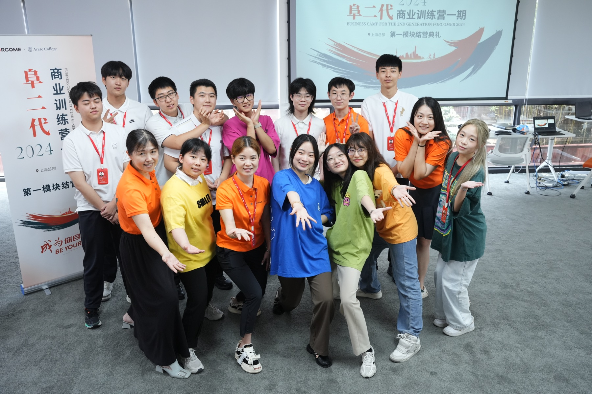
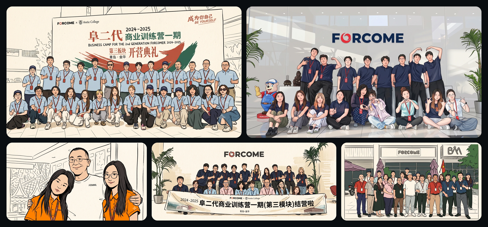

上海 / 相识与启动
先认识彼此，也认识未来的自己。
在上海总部的第一模块，学习从相互认识开始。每个人带着自己的兴趣和问题，第一次把想法放到同伴和真实企业的语境中讨论。

阜二代商业训练营一期
上海模块开营
这不是一次参观
从上海的相识和提问，到东南亚的制造现场，再到青岛与金华的暑假岗位体验。孩子们在一段段具体的工作里，看见产品、协作、责任和选择。

BETTER TOGETHER

共同走过的路

上海 / 相识与启动
在上海总部的第一模块，学习从相互认识开始。每个人带着自己的兴趣和问题，第一次把想法放到同伴和真实企业的语境中讨论。
五个模块，各自留下一组连续的现场记录。横向浏览，点开一张，再回到那次抵达。
从公众号记录的相识、制造现场、研发协作、公益活动，到美国站的企业、货架和仓储。每一张照片都留住了一段具体的学习。
所有模块的共同记录。从第一次相识，到走进工厂、研发现场与公益活动，最后回到一张张共同完成旅程的合影。
共同留言
把这一段旅程留在这里，等下一次回看时，再想起同行的人和当时的自己。
正在加载留言...